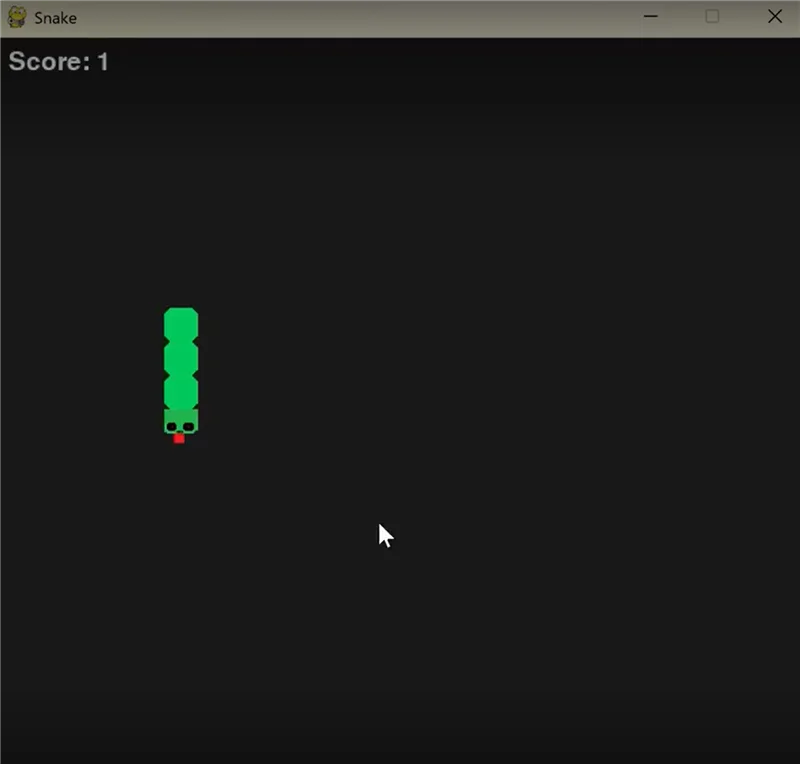

Snake
Ein klassisches Snake-Spiel, entwickelt in Java mit Swing. Der Spieler steuert eine Schlange auf einem Raster und sammelt Futter, ohne sich selbst oder die Wände zu treffen. Das Projekt demonstriert objektorientierte Programmierung und GUI-Entwicklung.